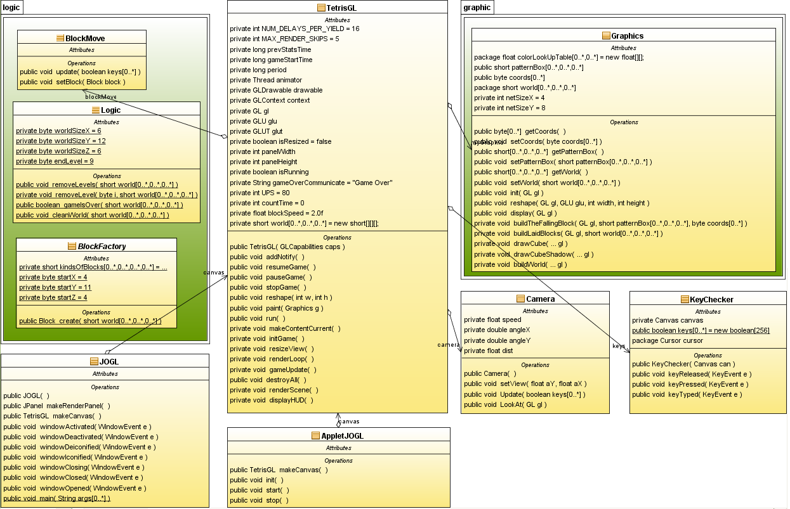

Tetris 3d
The OOP project work (Fall 2009)
We present a three dimensional tetris game. The application has been written using Java, Java Swing, and openGL library for Java, JOGL.
Authors:
Dariusz Kosz (185537), darkhus@gmail.com
Pawe³ Niechoda (183070), pawel.niechoda@gmail.com
Monika Machunik (183072), monika.machunik@gmail.com
We decied to split up our application into 3 parts (packages):
- logic part - contains game logic
- graphic part - it draws graphical aspect of the game
- central part - central point, it creates game framework, uses 2 others packages
Each team member was responsible for different part of it. In design stage we've
established way in which each central part will use other parts(some kind of public interface).
Class diagram:

THE RULES OF THE GAME:
-
As in simple tetris game, the goal is to fit the block into the net so that they occupy all the space on the bottom of the cuboid.
-
As soon as any level is full, it will disappear, leaving space for new blocks.
-
The game is over if the blocks reach the top of the cuboid.